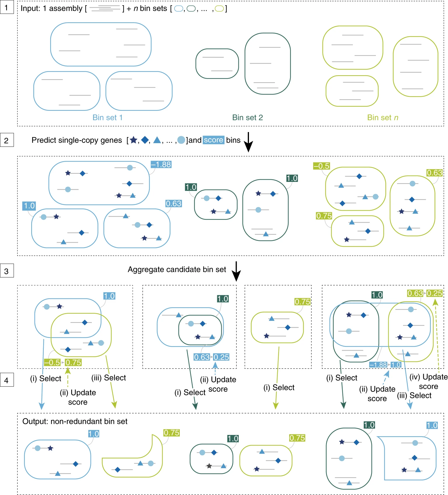

Binning, Refinamiento y Desreplicación
Last updated on 2025-04-06 | Edit this page
Mapeo
En los días anteriores aprendieron a evaluar la calidad de las lecturas, filtrarlas y ensamblarlas, por lo que este apartado comenzará con un ensamble ya generado.
De acuerdo con el flujo de análisis (Figura 1), debemos partir de un
ensamble, mapear las lecturas y obtener un archivo de profundidad de
cada contig en el ensamble.
Archivos necesarios para hacer binning
El proceso de ensamble y mapeo son demandantes en tiempo de ejecución y recursos. Así que nos dimos a la tarea de generar el ensamble y el archivo de profundidad para comenzar directamente con el binning. El ensamble lo corrimos con Megahit, te dejamos la línea que usamos:
BASH
# Megahit
megahit -1 data/full/48hrs_sm_R1.fastq -2 data/full/48hrs_sm_R2.fastq --min-contig-len 500 -t 40 --presets meta-sensitive --out-prefix 48hrs -o results/02.assembliesfull/megahit/48hrs
# Con Metaspades podría ser asi:
spades.py --meta -1 data/48hrs_sm_R1_5M.fastq -2 data/48hrs_sm_R2_5M.fastq -o results/02.assemblies/metaspades/48hrs El mapeo lo corrimos con bowtie2 que es una herramienta confiable y muy utilizada para alinear lecturas cortas a una referencia, en nuestro caso, la referencia es el ensamble metagenómico de la muestra de 48hrs. Bowtie2 genera un archivo de mapeo (SAM) que debe convertirse a un formato binario (BAM), para esta conversión usamos samtools que contiene multiples subherramientas para trabajar con archivos de mapeos. Para generar este archivo se utilizaron las siguientes lineas de código:
Callout
BASH
# Formatear el ensamble
bowtie2-build results/02.ensambles/megahit/48hrs/48hrs.fasta results/03.profundidad/48hrs --threads 40
# Mapear las lecturas contra el ensamble
bowtie2 -x results/03.profundidad/48hrs -1 data/48hrs_sm_R1.fastq -2 data/48hrs_sm_R2.fastq -p 40 -S results/03.profundidad/48hrs.sam
# Convertir de SAM a BAM y ordenar
samtools view -Sb -O BAM -@ 40 results/03.profundidad/48hrs.sam | samtools sort -@ 40 -o results/03.profundidad/48hrs_sorted.bam
# Obtener el índice
samtools index results/03.profundidad/48hrs_sorted.bamYa que generamos el archivo bam ordenado y el índice, obtuvimos un
archivo con la información de cobertura de cada contig dentro del
ensamble, este archivo de profundidad se generó con
jgi_summarize_bam_contig_depths que es una herramienta
desarrollada por el JGI.
No las ejecutes, sólo son un ejemplo para que las puedas usar con tus propios datos en el futuro.
Ejercicio 1. ¿Qué información requieren los programas de binning?
Antes de comenzar, reúnete con tu equipo y juntos:
- Revisen nuevamente el contenido de los directorios
02.ensamblesy03.profundidad.txt - En una diapositiva expliquen el
flujo teóricoque se siguió para obtener los archivos que están en esos directorios.
Usa esta liga de drive para ir trabajando durante el taller.
Sólo un miembro de cada equipo escriba en la presentación
Binning
Ahora si, vamos a agrupar los contigs del metaensamble en bins …
Metabat2
Metabat2
es una herramienta que agrupa los contigs tomando la cobertura de cada
contig y calcula su composición nucleotídica.

Metabat2. Kang et al., 2015. DOI:10.7717/peerj.1165
Para correr metabat necesitamos activar el ambiente
conda donde se aloja. ~~~ conda activate binning ~~~ {: .bash}
Ahora que ya tenemos el ambiente activado ejecutemos metabat:
BASH
metabat2 -i results/02.ensambles/48hrs.fasta -a results/03.profundidad/48hrs.mgh_depth.txt -o results/04.metabat/metabat -t 4 -m 1500
Se sabe que el valor mínimo de contig para reducir errores es
2000, lo puedes ver en la figura
6 de este artículo.
> ## Responde > ¿Cuántos bins se
formaron? > ¿Qué parámetros cambiarías o agregarías? >> ##
Solución >> ls results/04.metabat/ >> >>
metabat2 –-help > {: .solution} {: .challenge}
Ya que corrimos Metabat2 vamos a ejecutar MaxBin2, pero primero necesitamos desactivar el ambiente:
MaxBin2
MaxBin2
agrupa los contigs de acuerdo a la información de cobertura, composición
nucleotídica y marcadores de copia única.

MaxBin2. Wu et al., 2014. https://doi.org/10.1186/2049-2618-2-26
Vamos a ejecutarlo, activemos el ambiente.
Crea el directorio para los resultados de MaxBin2
Ahora si, vamos a ejecutarlo.
BASH
run_MaxBin.pl -thread 4 -min_contig_length 1500 -contig results/02.ensambles/48hrs.fasta -out results/05.maxbin/48hrs_maxbin -abund results/03.profundidad/48hrs.mgh_depth.txtResponde
¿Cuántos bins se formaron? ¿Qué porcentaje de completitud tienen?
ls results/05.maxbin/*.fasta | wc -l
cat results/05.maxbin/48hrs_maxbin.summary | column -t
Desactiva el ambiente
### Vamb
VAMB utiliza una combinación de enfoques de aprendizaje profundo y técnicas de agrupamiento basándose en sus patrones de composición de nucleótidos y en la co-ocurrencia de sus frecuencias de cobertura.
Activa el ambiente binning
Vamos a correr vamb, pero primero crea el directorio de resultados
Ejecutemos vamb:
BASH
nohup vamb --fasta results/02.ensambles/48hrs.fasta --jgi results/03.profundidad/48hrs.mgh_depth.txt --minfasta 500000 --outdir results/06.vamb/48hrs > outs/06.vamb.nohup &Responde
Si quisieras recuperar los genomas de virus ¿Qué parámetro cambiarías?
Otros programas para binning
Recientemente se publicó COMEBin, que utiliza un enfoque distinto a lo que hemos usado en este tutorial. En el siguiente link encontrarás el manual y una explicación general sobre su funcionamiento.
Refinamiento
Ya corrimos tres programas de binning, pero, recordemos que los agrupamientos pueden tener errores:

Para disminuir la contaminación e incrementar la completitud hay algunos programas que pueden ayudarnos. Entre ellos están Binning_refiner y DASTool.
CheckM
Antes de proceder al refinamiento es necesario tener claro cómo se
evalúa la completitud y contaminación de los bins. Para esta
evaluación se usa CheckM
que se ha convertido en una herramienta estándar para la evaluación de
la calidad de genomas y MAGs, y es usada por la mayoría de programas de
refinamiento.
Para hacer esta evaluación, CheckM utiliza una serie
de herramientas: tree organiza los genomas en un árbol de
referencia. tree_qa evalúa la cantidad de genes marcadores
filogenéticos y su ubicación en el árbol. El comando
lineage_set crea un archivo de marcadores específicos de
linaje, que se usa en el comando analyze para evaluar la
integridad y contaminación de los genomas. Finalmente, el comando
qa genera tablas que resumen la calidad de los genomas.
CheckM. Parks et al., 2015. https://genome.cshlp.org/content/25/7/1043.full
En este taller no vamos a correr CheckM porque los programas de refinamiento que usaremos ya lo corren de forma interna, sin embargo, es útil correrlo para tener una idea clara sobre la calidad de los bins que obtengamos.
Te dejamos la siguiente línea para que la uses en tus proyectos.
OUTPUT
#ejemplo de como correrlo con los bins de vamb
#se debe activar el ambiente metagenomics
#checkm lineage_wf results/06.vamb/48hrs/bins results/checkm/ -x fna -t 4 -f results/checkm/checkm_vamb_bins.txtY una captura de ejemplo de como se ve la salida de CheckM:
{kind=link}
Y ahora si, a refinar los bins …
Binning_refiner
Binning_refiner se enfoca en refinar y fusionar los bins para mejorar la integridad y reducir la contaminación. Identifica bins que pueden representar el mismo genoma y los fusiona. Después elimina posibles contaminaciones, durante el proceso, Binning_refiner evalúa la calidad de los bins.
Binning_refiner. Wei-Zhi & Torsten, 2017. https://doi.org/10.1093/bioinformatics/btx086
Necesitamos crear el directorio de resultados para binning_refiner y un directorio con los bins generados por cada programa
Ahora vamos a crear ligas simbólicas de los bins
generados por cada herramienta.
BASH
#metabat
cd results/07.binning_refiner/48hrsbins/metabat/
ln -s ../../../04.metabat/*.fa .
#maxbin
cd ../maxbin/
ln -s ../../../05.maxbin/*.fasta .
# vamb
cd ../vamb/
ln -s ../../../06.vamb/48hrs/bins/*.fna .
#regresar
cd ../../
Ahora si, corramos Binning_refiner
Y regresemos a nuestro directorio principal
Exploremos los resultados!
MARKDOWN
Refined_bin Size(Kbp) Source
48hrs_1 1535.49 48hrs_maxbin.004.fasta,metabat.5.fa,676.fna
48hrs_2 1506.01 48hrs_maxbin.002.fasta,metabat.3.fa,6952.fna
48hrs_3 1319.12 48hrs_maxbin.008.fasta,metabat.2.fa,28067.fna
48hrs_4 1263.79 48hrs_maxbin.005.fasta,metabat.9.fa,3736.fna
48hrs_5 1185.25 48hrs_maxbin.001.fasta,metabat.11.fa,15732.fna
48hrs_6 1052.67 48hrs_maxbin.003.fasta,metabat.4.fa,15732.fna
48hrs_7 557.49 48hrs_maxbin.006.fasta,metabat.1.fa,28990.fnaResponde
¿Cuántos bins analizó Binning_refiner y cuántos quedaron después del refinamiento? ¿Hubo separación de algunos bins para formar otros?
Sankey plot
Puedes generar tu propio sankey plot para visualizar los resultados de Binning_refiner. Te dejamos el código por si te es útil.
R
# Cargar las librerias
library(dplyr)
library(networkD3)
# revisa tu ubicación
getwd()
# OJO
setwd("/home/ELALUMNOQUEERES/taller_metagenomica_pozol")
# Cargar los datos
sankey_data <- read.csv("results/07.binning_refiner/48hrs_Binning_refiner_outputs/48hrs_sankey.csv")
# Crear una lista de nodos únicos
nodes <- data.frame(name = unique(c(sankey_data$C1, sankey_data$C2)))
# Crear el dataframe de enlaces
links <- sankey_data %>%
mutate(source = match(C1, nodes$name) - 1,
target = match(C2, nodes$name) - 1,
value = Length_Kbp) %>%
select(source, target, value)
# Crear el gráfico Sankey
sankey_plot <- sankeyNetwork(Links = links, Nodes = nodes,
Source = "source", Target = "target",
Value = "value", NodeID = "name",
fontSize = 12, nodeWidth = 30)
# Mostrar el gráfico
sankey_plot
# Guardar
library(htmlwidgets)
saveWidget(sankey_plot, file = "48hrs_sankey_plot.html")
{kind=link}
DASTool
DASTool es una herramienta utilizada para mejorar la calidad de los bins. Evalúa la integridad, combina los resultados de diferentes bineadores y por consenso selecciona los mejores bins de cada herramienta. Una vez que DASTool ha seleccionado los mejores bins, realiza un proceso de refinamiento para optimizar los resultados.

DASTool. Sieber et al., 2018. https://doi.org/10.1038/s41564-018-0171-1.
Vamos a correr DASTool …
Primero crea el directorio para los
resultados
DASTool necesita como entrada un archivo tabular con información de los resultados de cada programa de binning.
BASH
Fasta_to_Contig2Bin.sh -i results/04.metabat/ -e fa > results/08.dastool/48hrs_metabat.dastool.tsv
Fasta_to_Contig2Bin.sh -i results/05.maxbin/ -e fasta > results/08.dastool/48hrs_maxbin.dastool.tsv
Fasta_to_Contig2Bin.sh -i results/06.vamb/48hrs/bins/ -e fna > results/08.dastool/48hrs_vamb.dastool.tsvYa que tenemos los archivos tsv podemos empezar con el refinamiento!!
BASH
DAS_Tool -i results/08.dastool/48hrs_metabat.dastool.tsv,results/08.dastool/48hrs_maxbin.dastool.tsv,results/08.dastool/48hrs_vamb.dastool.tsv -l metabat,maxbin,vamb -c results/02.ensambles/48hrs.fasta -o results/08.dastool/48hrs -t 4 --write_binsResponde
¿Cuántos bins quedaron después del refinamiento con DASTool? ¿Más o menos que con Binning_refiner? ¿Qué calidad tienen?
Desreplicación
dRep
La desreplicación es el proceso de identificar conjuntos de genomas que son “iguales” en una lista de genomas y eliminar todos los genomas excepto el “mejor” de cada conjunto redundante. dRep es una herramienta útil para esto. Utiliza distancias Mash y ANIm para discriminar entre MAGs iguales.

DASTool. Olm et al., 2017. https://academic.oup.com/ismej/article/11/12/2864/7537826.
Ya que tenemos los resultados de los dos refinadores ejecutaremos dRep para desreplicar y seleccionar el mejor representante de cada bin.
Primero vamos a crear el directorio de resultados para dRep.
Y entraremos al directorio bins dentro del directorio de resultados para colocar los bins que queremos comparar. En este caso los generados por ambos refinadores (pero podrían ser los bins refinados de cada punto de muestreo).
Con las siguientes lineas podemos copiar los bins en este directorio:
Primero los de DASTool
BASH
for i in $(ls ../../08.dastool/48hrs_DASTool_bins/*.fa); do
name=$(basename $i .fa); cp $i $name".fasta"
done
Y ahora los de Binning_refiner
Ya que los copiamos, regresemos al directorio principal.
Y ahora si, vamos a correr dRep …
BASH
export PATH=/miniconda3/envs/metagenomics/bin:$PATH
nohup dRep dereplicate results/09.drep/ -d -comp 50 -con 10 --SkipSecondary -g results/09.drep/bins/*.fasta > outs/09.drep.nohup &
> ### Nota > > El argumento
--SkipSecondary no se aconseja poner, en la vida real
queremos que se hagan todas las agrupaciones > para discriminar
genomas. En este ejemplo fue necesario ponerlo porque no logramos llamar
a ANIm {: .callout}
Este es uno de los plots generados por dRep, que representa los mejores bins desreplicados.
{kind=link}
Vamos a desactivar el ambiente de dRep
Responde
¿Cuántos clústers se formaron? ¿Cuántos MAGs son únicos?
Discusión
Para tomar en cuenta
- En la vida real, si el proyecto de metagenómica que estás desarrollando tiene librerías de diferentes muestras usarías dRep entre todos los conjuntos de bins ya refinados para no tener redundancia de genomas.
- Qué harías si antes de desreplicar tienes un bin que tiene 98 % de completitud y 11 % de contaminación?. dRep en automático lo descartaría.
Propondrías alguna manera para quedarte con este bin y curarlo para reducir su contaminación?
Por suerte hay más programas que pueden ayudarnos a curar nuestros bins manualmente, una herramienta útil para esto es mmgenome2
Ya que tenemos los bins refinados y desreplicados opcionalmente podrías reensamblarlos. La manera sería mapear las lecturas de toda la muestra a los bins finales y con las lecturas mapeadas y el bin, generar un ensamble genómico para cada uno. Con esta aproximación se genera un MAG más pulido y la contaminación se reduce.
Aunque en muchos reportes verás que los autores reensamblan sus MAGs, en otros no lo hacen y no hacerlo no está mal, pero hacerlo mejora la calidad.
Ahora te toca a tí
Ejercicio 2
Ahora te toca a tí.
- Reúnanse en equipos y repliquen todo el flujo hasta este punto con la muestra que les toca.
- Discutan cada resultado obtenido.
- En la carpeta compartida de Drive busquen la diapositiva para el Ejercicio 2.
- En la diapositiva correspondiente resuman sus resultados obtenidos.
Tiempo de actividad (2 hr)
Tiempo de presentación de resultados (5 min por equipo)